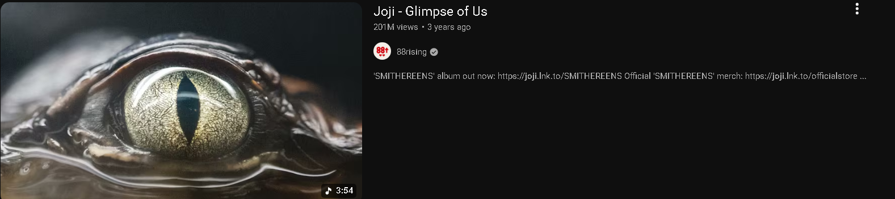

Click to select the song
MUSIC VIDEO

She'd take the world off my shoulders
If it was ever hard to move
She'd turn the rain to a rainbow
When I was living in the blue
Why then, if she's so perfect
Do I still wish that it was you?
Perfect don't mean that it's workin'
So what can I do? (Ooh)
When you're out of sight
In my mind
'Cause sometimes, I look in her eyes
And that's where I find a glimpse of us
And I try to fall for her touch
But I'm thinkin' of the way it was
Said I'm fine and said I moved on
I'm only here passing time in her arms
Hopin' I'll find a glimpse of us
Tell me he savors your glory
Does he laugh the way I did?
Is this a part of your story?
One that I had never lived
Maybe one day, you'll feel lonely
And in his eyes, you'll get a glimpse
Maybe you'll start slippin' slowly and find me again
See Joji Live
Get tickets as low as $58
You might also like
so american
Olivia Rodrigo
Like That
Future, Metro Boomin & Kendrick Lamar
Type Shit
Future, Metro Boomin, Travis Scott & Playboi Carti
[Pre-Chorus]
When you're out of sight
In my mind
'Cause sometimes, I look in her eyes
And that's where I find a glimpse of us
And I try to fall for her touch
But I'm thinkin' of the way it was
Said I'm fine and said I moved on
I'm only here passing time in her arms
Hopin' I'll find a glimpse of us
Ooh
Ooh-ooh-ooh
Ooh
Ooh-ooh-ooh
'Cause sometimes, I look in her eyes
And that's where I find a glimpse of us
And I try to fall for her touch
But I'm thinkin' of the way it was
Said I'm fine and said I moved on
I'm only here passing time in her arms
Hopin' I'll find a glimpse of us